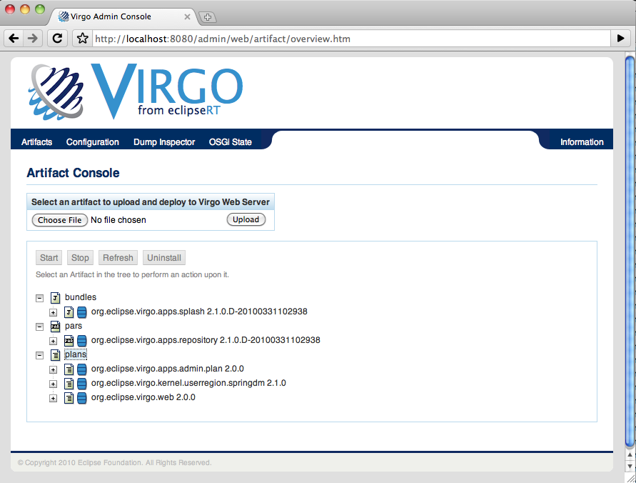
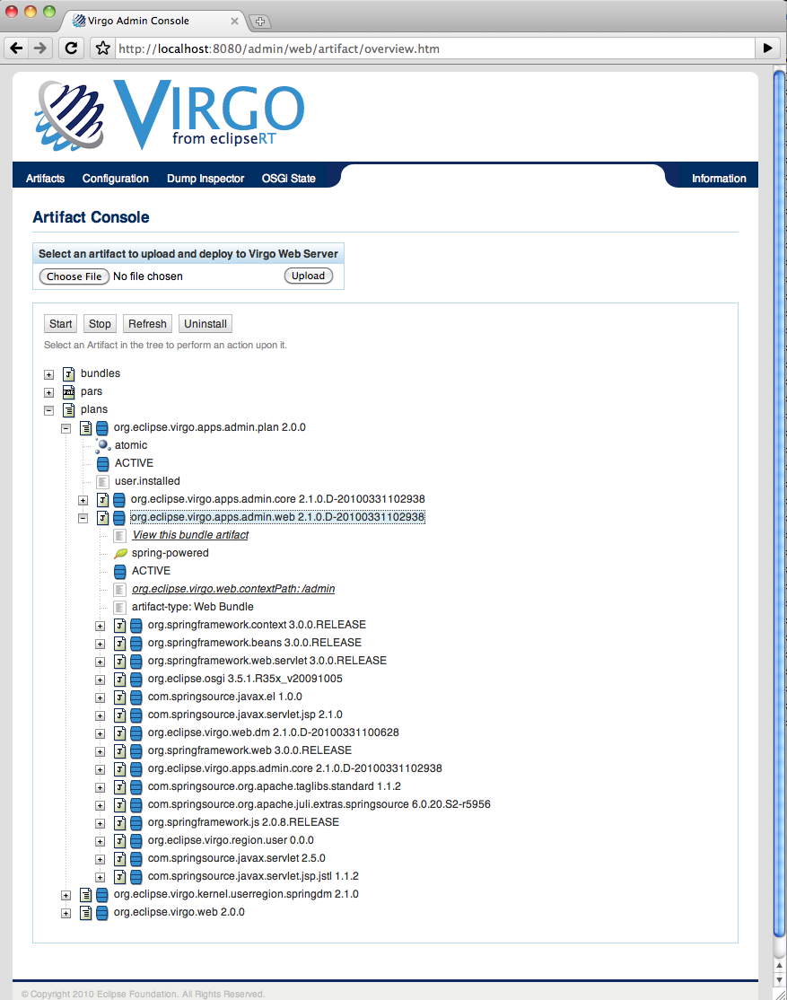
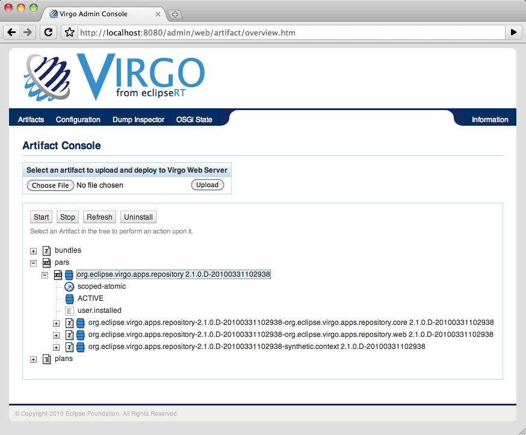
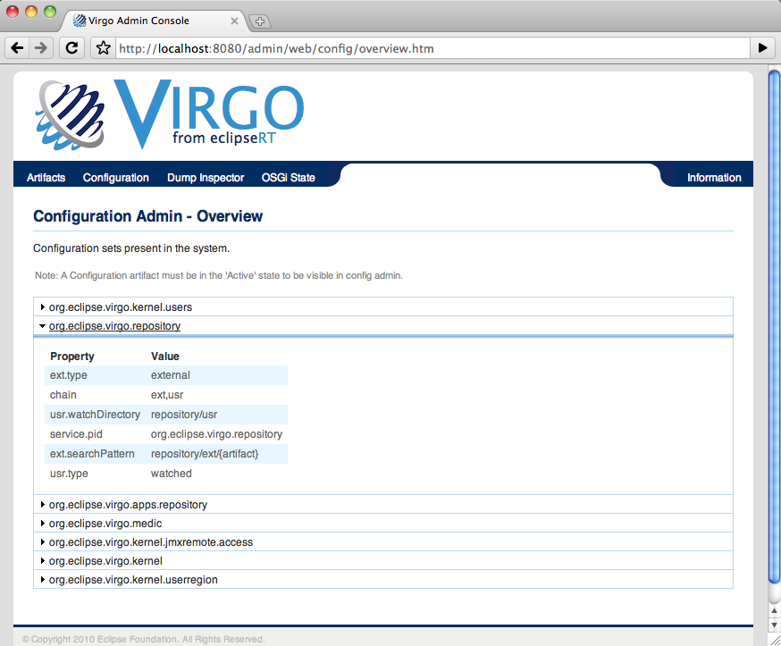
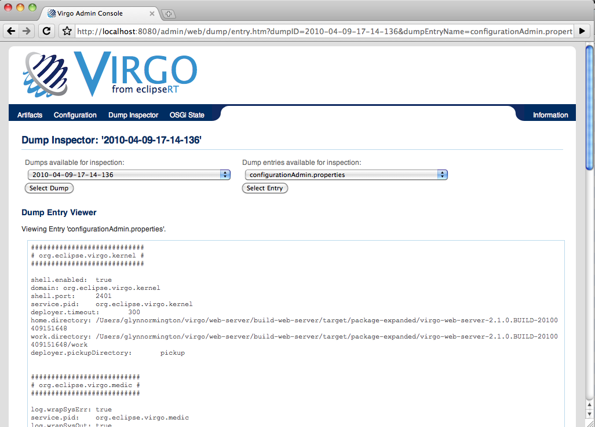
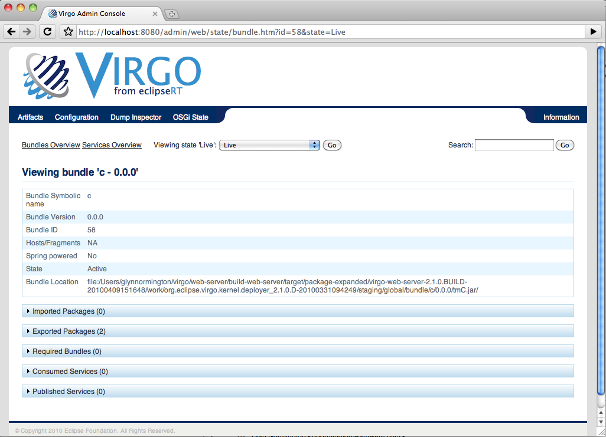

The following use cases describe the typical tasks that you can perform with the Admin Console:
The following procedure describes how to view the list of artifacts that are currently deployed in the user region of Web Server. It then describes how to stop, start, refresh, and uninstall the deployed artifacts.
From the main Admin Console page, click the Artifacts link at the top.
In the lower part of the page, the console displays a tree structure that displays the four kinds of artifacts that you can deploy to the user region of Web Server: bundles, configuration files, PARs, and plans. When you first install Web Server, there will already be a number of artifacts deployed related to the Admin console itself, the main splash screen, the repository, and so on.
The following graphic shows an expanded tree that displays a few of the deployed artifacts:

To view details of a particular artifact, click the "+" to the left of the artifact to expand the tree. The following graphic shows an expanded org.eclipse.virgo.apps.admin.web bundle:

The particular details that the Admin Console displays depends on the artifact. For example, for all artifacts you can view their state and how it was installed (such as by a user using the Admin Console or programmatically). The two most common states are Active (running and ready to be used) and Resolved (all dependencies resolved but you must start it before you can use it). An artifact can also be in one of the transition states, such as Starting and Stopping.
As shown in the preceding graphic, the Admin Console provides a link for Web modules that you can click on to actually invoke the application (org.eclipse.virgo.web.contextPath:/admin in the example above).
For PARs and plans, the Admin Console also displays whether the artifact is:
The following graphic shows details of a PAR, in particular that it is both scoped and atomic:

Finally, for bundles, PARs, and plans, you can see the list of bundles that they depend on; this typically means the bundles that export the packages that they import.
To manage the lifecycle of an artifact, click on its name in the expanded tree to enable the lifecycle buttons. Then, depending on the current state of the artifact, you can:
The following procedure describes how to install a new artifact (bundle, PAR, plan, or configuration file.) The procedure is similar for all types of artifacts; the procedure uses a WAR file as an example.
From the main Admin Console page, click the Artifacts link at the top.
Click the Browse button to invoke the file loader application for your platform. Note that the Browse button searches the computer that is running the browser in which you invoked the Admin Console and not the computer on which Web Server is running, in the case where they are different.
Use the file loader to find the artifact. This can be a WAR or JAR file bundle, a configuration artifact that contains properties, an XML file that corresponds to a plan, or a PAR file.
Click Upload to actually upload the artifact to Web Server.
Web Server automatically attempts to resolve all dependencies, and then puts the artifact in an Active state if possible. If all is successful, the message Artifact Deployed appears next to the Artifact Console header. If there is an error, a message to that effect is displayed; to get more details about the error, see the terminal window from which you started Web Server.
Expand the artifact tree to view your newly deployed artifact. If Web Server installed it without errors, it should show up in the appropriate section and be in an Active state.
The following procedure describes how you can view the list of configuration artifacts that are currently deployed to Web Server, and then view the specific properties that are defined for a particular configuration artifact.
From the main Admin Console page, click the Configuration link at the top.
The Admin Console displays all the configuration artifacts that are currently deployed, as shown in the following graphic:

To view the properties defined for a particular configuration artifact click the arrow to the left of its name.
The following procedure describes how to view the details of any service dumps that have occurred in Web Server. Each time a dump is triggered for Web Server, the server creates a directory in $SERVER_HOME/serviceability/dump with a name corresponding to the time the dump occurred, and then the server populates the directory with detailed information. Using the Admin Console, you can easily view this information.
A service dump is triggered when there is either a failure in the Web Server code or Web Server detects a thread deadlock in either its own code or a user application. The service dump contains a snapshot of all the important state from the running Web Server instance. NOTE: This snapshot is not intended for end user consumption but is useful for service personnel.
From the main Admin Console page, click the Dump Inspector link at the top.
In the drop-down box on the left, select the dump you want to inspect based on its timestamp.
Click Select Dump.
In the right drop-down box, select the type of dump information you want to view.
For example, summary.txt provides a short summary of why the dump might have occurred. The thread.txt option provides information about the state of the Web Server threads at the time of the dump, including any that were deadlocked. The repository options provide information about what was in the external and user repositories at the time of the dump. The configurationAdmin.properties option provides a snapshot of the complete configuration of Web Server, including the kernel and repositories.
Click Select Entry.
The Admin Console displays the information in the Dump Entry Viewer, as shown in the following graphic:

Note that the dump entry osgi.zip is a binary OSGi state dump which should be viewed as described in
Viewing Overview and Details of the OSGi State.
Dumps may contain other binary entries which are not intended for viewing via the dump inspector.
For example, heap.out contains a dump of the Java heap and region.digraph
contains a dump of the sharing policy between kernel and use region (this is used by the OSGi state dump inspector).
The following procedure describes how you can view the OSGi state of the Web Server, either currently or at the time that a particular service dump occurred.
The OSGi state is a list of bundles that are currently installed. When viewing the current state, additional information is available such as whether each bundle is Spring powered and a list of services in the OSGi service registry. This additional information is not available when viewing a state dump.
From the main Admin Console page, click the OSGi State link at the top.
By default, the Admin Console displays the complete list of bundles that are currently installed in Web Server.
For each bundle, the console displays its internal ID, its symbolic name, its version, and its current state (usually either Active or Resolved.)
To view the bundles that were installed at the time of a service dump, select the service dump based on its timestamp from the drop-down box on the right and click Go.
To view details about a particular bundle, click on its bundle ID. A full description of the bundle is displayed, as shown in the following graphic:

The console displays again the symbolic name, version, and internal ID of the bundle. It then displays whether the bundle is Spring powered and the exact physical location of the bundle JAR file on the computer that hosts Web Server.
The console then displays the full list of packages that the bundle imports, as well as the bundles that in turn export these imported packages. The console also displays the packages that the current bundle exports, and then in turn the list of other installed bundles that are currently importing these exported packages. For each package, you can drill down and view details of the corresponding bundle.
Similarly, the console displays the consumed and provided OSGi services.
Finally, the console also displays information about the Spring context, if the bundle is Spring powered.
To view the full list of OSGi services, click the Services Overview link from the main OSGi state page
Typically, the list of bundles and services can be very long, making it difficult to find a particular bundle. Use the Search box at the top right corner to narrow down the list of displayed bundles.
Enter a package name with wildcards '*' representing part of a package name (excluding periods) and
'**' representing one or more components of a package name separated by periods.
For example, '**.virgo.**' displays Virgo packages.